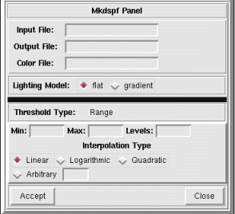

NVIZ Reference Manual
CONTENTS
BACK
Mkdspf Panel - Range Threshold
On the Mkdspf Panel, you use the Range
threshold option to create an evenly spaced set of display isosurfaces
covering a user defined range of the Input File.
-

OPTIONS
- Min
- Enter the minimum or start value for the display isosurfaces.
- Max
- Enter the maximum or stop value for the display isosurfaces.
- Levels
- Enter the number of isosurfaces to create between the minimum and
maximum.
- Interpolation Type
-
- Linear
- Uses a linear interpolation to calculate the display isosurfaces
levels.
- Logarithmic
- Uses a logarithmic interpolation to calculate the display
isosurfaces levels.
- Quadratic
- Uses a quadratic interpolation to calculate the display
isosurfaces levels.
- Arbitrary
- Uses an arbitrary interpolation based on the entered arbitrary
value to calculate the display isosurfaces levels.